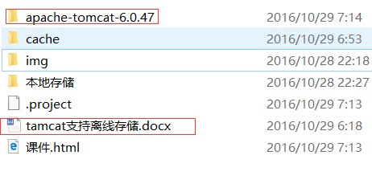
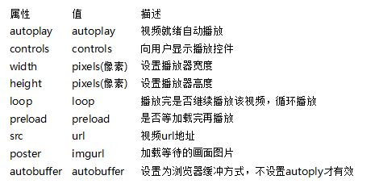
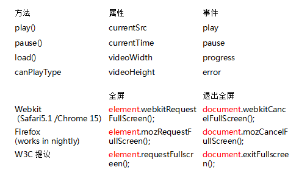
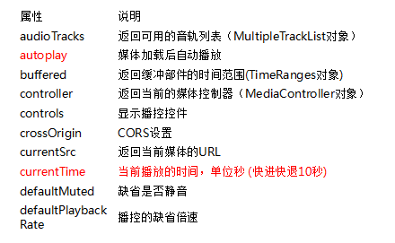
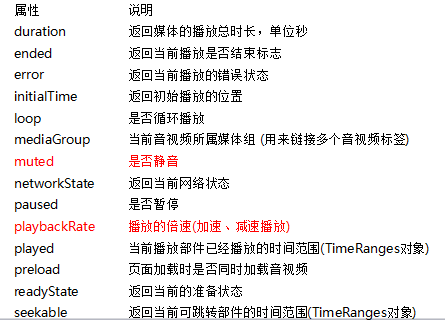
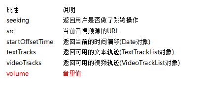
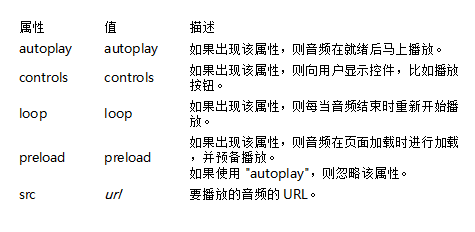

一、webStorage
1、目标
1、了解cookie的不足之处，引入webstorage的概念
2、学习并且掌握webstorage有哪两种
3、学习并且掌握sessionStorage
4、学习并且掌握localStorage
5、反复练习localStorage的用法
6、掌握离线存储技术
7、掌握多媒体标签的一些基本属性
8、自主开发出一个自定义视频播放器的控件
9、熟悉使用webwoker
10、了解webSocket的原理
1、HTML5中的本地存储概念是什么？
很多时候我们会存储用户本地信息到电脑上，例如：比方说用户有一个填充了一半的长表格，然后突然网络连接断开了，这样用户希望你能存储这些信息到本地，当网络恢复的时候，他想获取这些信息然后发送到服务器进行存储
现代浏览器拥有的存储被叫做“LocalStorage”,你可以存储这些信息
2、本地存储的生命周期是什么？
本地存储没有生命周期，它将保留知道用户从浏览器清除或者使用Javascript代码移除
2、本地存储和cookies之间的区别
3、webStorage
在H5中webStorage其实就是在web上存储数据，分为两种：
sessionStorage 在浏览器关闭时存储的数据将消失---临时存储
localStorage 可以一直存在 --- 永久存储
4、webStorage写法
1、储存：localStorage.setItem(key,value);
localStorage.key = value;//key、value为键值对形式，key作为唯一标识，value做位置，不建议使用 这一种，但是别不认识
注：如果key存在时，更新value
2、获取数据：localStorage.getItem(key);
localStorage.key //不建议使用这一种，但是别不认识
注：如果key不存在返回null
3、删除：localStorage.removeItem(key);
注：一旦删除，key对应的数据将会全部删除
4、全部清除：localStorage.clear();
注：某些时候使用removeItem逐个删除太麻烦，可以使用clear,执行的后果是会清除所有localStorage对象保存的数据
5、遍历localStorage存储的key
.length 数据总量，例：localStorage.length
.key(index) 通过索引获取key值，例：var key=localStorage.key(index);
6、存储JSON格式数据
总结：如果需要判断是否支持本地存储，可以通过window.sessionStorage或者window.localStorage去判断。
5、离线缓存
1、应用场景：
a）、离线浏览--缓存数据（新闻、阅读、视频）
b）、本地保存用户的操作数据（邮箱软件----离线编辑、在线发送）
2、HTML5提供的数据持久化技术：
a）、Application Cache
本地缓存所应用的文件
b）、WEB SQL
关系型数据库，通过SQL数据访问
c）、IndexDB
索引数据库
3、Application Cache
a）、Manifest文件
b）、Application Cache文件
c）、特点
Manifest文件必须有变化才更新
一次必须更新Manifest文件中的所有文件
下次才生效

6、多媒体（video/audio）( 案例 )
1、应用场景：
1、常见的视频格式 视频的组成部分：画面、音频、编码格式 视频编码：H.264、theora、VP8(google开源)
2、常见的音频格式 编码：AAC、MP3、Vorbis
3、HTML5虽然能在完全脱离插件的情况下播放音视频，但不是支持所有的格式 支持的视频格式： OGG = 带有Theora视频编码+Vorbis音频编码的ogg文件 浏览器支持：F,C,O MPEG4 = 带有H.264视频编码+AAC音频编码的MPEG4文件 浏览器支持:S,C WebM = 带有VP8视频格式编码+Vorbis音频编码的WebM格式 浏览器支持:I、F、C、O
4、视频Video的使用方法
<video src="http://www.bigaody.com" controls="controls"></video>
< video src="文件地址" controls="controls">
您的浏览器暂不支持video标签。播放视频
</ video >
< video controls="controls" width="300">
<source src="move.ogg" type='video/ogg; codecs="theora, vorbis"'>
<source src="move.mp4" type='video/mp4; codecs="avc1.42E01E, mp4a.40.2"' >
<source src="move.webm" type='video/webm; codecs="vp8, vorbis"' >
您的浏览器暂不支持video标签。播放视频
</ video >
5、video常见属性 
6、video常见方法 
7、video的API属性    8、audio支持的格式 HTML5支持的音频格式：
Ogg 免费 支持的浏览器:C、F、O
MP3 收费 支持的浏览器: I、C、S
Wav 收费 支持的浏览器: F、O、S 9、audio的使用
<audio src="文件地址" controls="controls"></audio>
< audio src="文件地址" controls="controls">
您的浏览器暂不支持audio标签。播放视频
</ audio>
< audio controls="controls" >
<source src="happy.MP3" type="video/mpeg" >
<source src="happy.ogg" type="video/ogg" >
您的浏览器暂不支持audio标签。播放视频
</ audio> 10、audio常见属性 
7、webwoker（ 单线程案例 webwoker案例 ）
Web Workers 是在HTML5中新增的，用来在web应用程序中实现后台处理的一种技术
在HTML4中，js创建的程序都是单线程的，如果花费时间比较长的话web界面就会长时间没有响应，最恶劣的情况还会跳出一个脚本提示框：
提示脚本运行时间过长，是否继续。。。。于是就引出了本文的主角：Web Workers API
postMessage() 方法 - 它用于向 HTML 页面传回一段消息。
onmessage() 方法 - 收数据，数据为e.data。
如需终止 web worker，并释放浏览器/计算机资源，请使用 terminate() 方法：
我们可以做什么：
1.可以加载一个JS进行大量的复杂计算而不挂起主进程，并通过postMessage，onmessage进行通信
2.可以在worker中通过importScripts(url)加载另外的脚本文件
3.可以使用 setTimeout(), clearTimeout(), setInterval(), and clearInterval()
4.可以使用XMLHttpRequest来发送请求
5.可以访问navigator的部分属性
有那些局限性：
1.不能跨域加载JS
2.worker内代码不能访问DOM
3.各个浏览器对Worker的实现不大一致，例如FF里允许worker中创建新的worker,而Chrome中就不行
4.不是每个浏览器都支持这个新特性